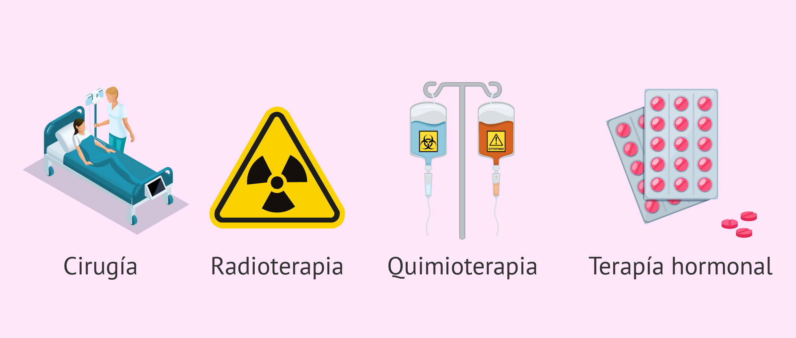

Tratamientos para el cáncer
| Cirugía | Quimioterapia | Radioterapia | Inmunoterapia | Terapia dirigida |
| Procedimiento médico que consiste en la extracción del tumor y, en algunos casos, de tejidos cercanos o ganglios linfáticos, con el objetivo de eliminar el cáncer del cuerpo. | Tratamiento que utiliza medicamentos para destruir o detener el crecimiento de células cancerosas, afectando también algunas células sanas. | Uso de radiación de alta energía para destruir células cancerosas o reducir el tamaño de los tumores. | Tratamiento que estimula o fortalece el sistema inmunológico del paciente para que reconozca y ataque las células cancerosas. | Tratamientos que actúan específicamente sobre moléculas o genes implicados en el crecimiento y supervivencia de las células cancerosas, reduciendo el daño a células sanas. |

Es importante reconocer que cada uno de estos tratamientos se selecciona de acuerdo con el tipo de cáncer, su etapa y las condiciones del paciente, por lo que no todos los casos se manejan de la misma manera.